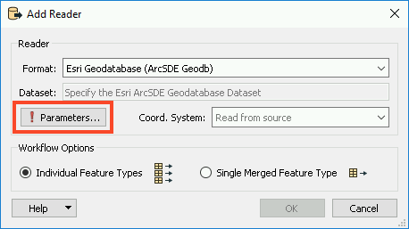
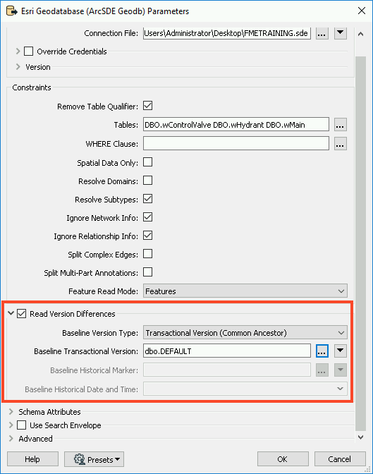
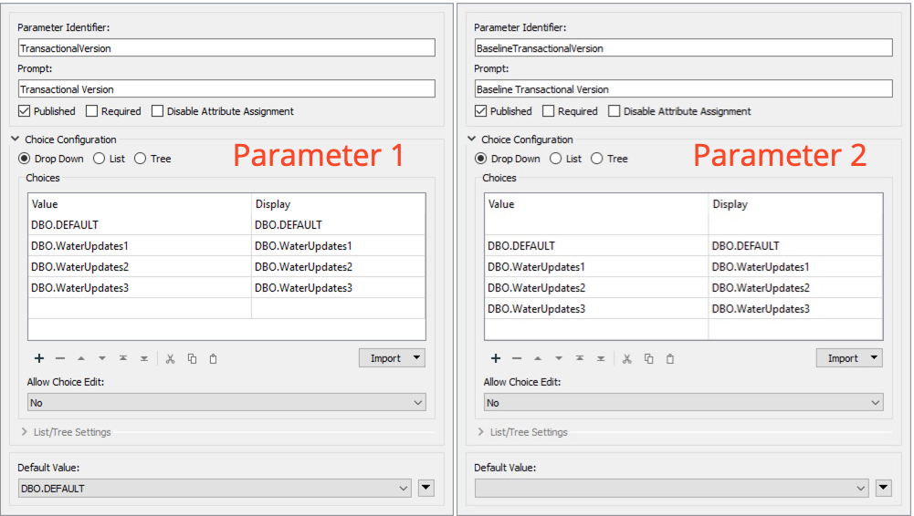
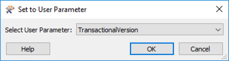

After completing this unit, you’ll be able to:
FME has the capability to extract differences (or deltas) from an Enterprise Geodatabase (ArcSDE). The key functionality is:
This tutorial focuses on extracting differences from a transactional versioned Geodatabase. However, the principals are the same for reading differences from historical archives.
If you are not familiar with Esri Geodatabase versions or archiving then the following links will be useful:
Versioning is only available in the Enterprise Geodatabase (ArcSDE).
Being able to extract differences (or deltas) from a Geodatabase allows you to replicate or synchronize your Geodatabase with other databases in your organization.
A versioned Geodatabase will often have a hierarchical structure as shown below:
In ArcPro this will look like:

The Esri Geodatabase (ArcSDE Geodb) reader parameters dialog has several parameters which control the different data you can extract from versions (see the FME User Documentation for more details). Referring to the image of the Geodatabase reader parameters below...

These parameters are also available in FME Data Inspector if you want to visualize the deltas in your geodatabase.
FME Workspaces for extracting differences are surprisingly straightforward. This example converts water utility data from Geodatabase (ArcSDE) to PostGIS. The key part of the workflow is based on the published parameters:

In this example, the data is being read from the Transactional Version: DBO.WaterUpdates3 and compared against the Baseline Transactional Version DBO.DEFAULT.
The following three images from FME Data Inspector illustrate the state of the Esri Geodatabase versions:
 Image 2: Edited water mains data - DBO.WaterUpdates3 version
Image 2: Edited water mains data - DBO.WaterUpdates3 version
 Image 3: Differences between DBO.WaterUpdates3 and DBO.DEFAULTS versions
Image 3: Differences between DBO.WaterUpdates3 and DBO.DEFAULTS versions
What you don't see in the images are the deleted objects, because they have no geometry. However, they are logged in the FME Data Inspector Table Viewer and Feature Information windows:


Notice that the fme_db_operation attribute has been set to DELETE.
When you extract differences from geodatabase transactional versions or archives, FME automatically sets the fme_db_operation attribute to INSERT, UPDATE or DELETE. Most FME database writers support fme_db_operation for incremental updates to the database. This means that it is straightforward to push the deltas into the target database. For more on how to use fme_db_operation see the article Incremental Database Updates using the FME format attribute fme_db_operation.
The geodatabase reader has a Child Version parameter that can be used to create the next version for editing. In this example, we're reading the differences between DBO.WaterUpates3 and the DBO.DEFAULT versions. If we set the child version to be WaterUpdates4 then FME will create the new version which will then be your starting point for the next round of edits in your geodatabase. This allows you to set up a data replication workflow: extracting differences, creating a new version, undertake edits in the new version, next round of differences, etc.

Working with historical archives is very similar to the transaction version described above. The geodatabase reader parameters dialog has several parameters (marked in the parameters dialog image above) which control the difference data you can extract from archives:
When extracting differences from a versioned geodatabase, FME uses the concept of a common ancestor, so all differences are based on the common ancestor of the two versions you're working with. For this reason, it's not a good idea to extract differences between different branches in your versioned geodatabase as shown below:

- you're likely to get unpredictable results!
The following instructions will walk you through how to create a workspace that will read your ArcSDE versions.
1. Add an Esri Geodatabase(ArcSDE Geodb) Reader
Open FME Workbench and start a blank workspace. Add an Esri Geodatabase (ArcSDE Geodb) reader to the canvas and open the Parameters.

In the Parameters, browse to the FMETRAINING.sde Connection File. Next, enable Remove Table Qualifier and select all of the Tables by clicking on the ellipsis and selecting DBO.
Next, enable Read Version Differences. This will allow us to set a Baseline(either a Transactional Version or Historical time if using Archiving) which will be used as the 'parent' of the comparison version.
In order for the 'child' version to be compared against the Baseline, we need to ensure we set the Version on the Reader otherwise it will default to the version used in the SDE connection file. Most often this is the DEFAULT version. Click on the ellipsis next to Baseline Transactional Version and select dbo.DEFAULT. Click OK twice to add the reader.

2. Add Inspectors
Now that we’ve added the data, we will want to inspect our versions using either Visual Preview or FME Data Inspector. Select all three reader feature types by clicking and dragging a box around them. Next, right-click on any one of the three and select Connect Inspectors.
3. Create User Parameters
When we run the workspace, we want to select which versions to compare, for that we will use user parameters to quickly switch between versions. In the Navigator window, right-click on User Parameters and select Manage User Parameters. We will create two parameters, with the following setup:
Parameter 1:
Parameter 2:

4. Assign User Parameters
Now that we’ve created our user parameters, we need to assign them to the reader parameters. In the Navigator, expand the [GEODATABASE_SDE] reader and then expand Parameters, and expand Advanced. Right-click on Transactional Version and select Link to User Parameter.
In the Set to User Parameter dialog, select TransactionalVersion.

Repeat this step with Baseline Transactional Version, and set it to the BaselineTransactionalVersion parameter.
We need to create one more user parameter, but we can do that from the Navigator panel. Right-click on Child Version Name and select Create User Parameter. In the Add/Edit User Parameter dialog, click OK as we can accept the default parameters.
You should now have three parameters linked for the GEODATABASE_SDE reader.
5. Save and Run Workspace
Save the workspace, then run with Prompt for User Parameters enabled. Now each time you run the workspace, you can select which versions you wish to compare.
If you want to run the examples described above then you can use the following steps to load the sample data into your own Geodatabase (ArcSDE) environment. Use the package create-differences.zip . If you are not familiar with working with versioned Geodatabases then you might wish to review the article on editing version data in ArcGIS.
Use the version hierarchy shown in the image:

Note: You can't create all the versions and then load them, you have to create, load, create, load etc.